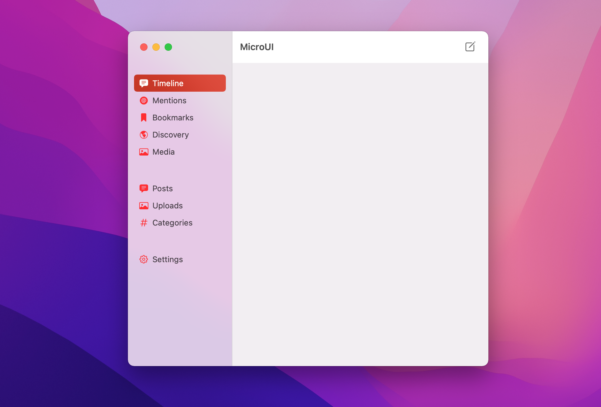

The long weekend is almost over and I didn’t work on the side projects/spikes I planned to put my hands on. On the other hand, I walked an avarage of 16k steps/day and took a lot of pictures with my new camera.
The X100V lens cap doesn’t fit when the weather sealing filter is attached, but the one from the X100T does 📷
I’m trying to extract Fuji-specific information from photos using CGImageProperties, but I get nothing. From Canon and Nikon it trivial, but for other camera makers I can’t make it work 📷 👨💻
OK, cool. I’ve used the Network Client and API wrapper I wrote to run a 20-line Microblog app directly from the new Playgrounds for iPad.
Thanks to my internet connection it takes seconds (a minute?) to download Xcode. Thanks to my personal computer, it takes hours to install the very same Xcode. But I have no reasons to upgrade my computer since I use the company one to code and an iPad M1 for everything else.
Yesterday Apple launched Swift Playgrounds 4 for iPad, and it’s possible now to build iPad and iOS applications directly from the iPad. I’m looking forward to porting some of my little experiments to the new project format 👨💻
I exported my Goodreads shelf to import on Micro.blog, but none of the books had ISBN! I had to use the ISBN Search to add the information to more than 90 books 📚 The good news: Micro.blog imported all the books correctly.

I learned Vim 22 years ago and I still use it on a daily basis. That’s insane 👨💻
Every single morning he goes outside for about 30 seconds to check the weather and then jumps on the sofa 📷 ❄️
“Comfort food” 📚 📷
- Contact by Carl Sagan
- Jurassic Park by Michael Crichton
- Timeline by Michael Crichton


Pixelmator Pro is 50% off, but I don’t know if it’s worth. I currently have Darkroom which suffices my needs, but at the same time I really like the original Pixelmator app 📷
Every now and then I reset my camera to default settings. Ever time I do this I learn something new about my camera 📷
We have a new home in the macOS App Store for the NordVPN app, and we’re sharing it with the iOS folks. One centralized page for both apps improves discoverability a lot 👨💻
Micro.blog users can use their Glass feed to automatically add photos to their Micro.blog timeline! 📷 👨💻
It’s possible to follow Glass users using NetNewsWire (or any other feed reader) as long as they have a public profile page. The photos on their feed have a really good quality, way better than those from Flickr’s feeds 📷 👨💻
I really want Glass to succeed, so I’m going for the annual subscription 👨💻 📷
I’m moving this book to the top of the pile: A Philosophy of Software Design by John Ousterhout 📚 I was told it’s really good.
I really dislike having to write workarounds, but there’s a macOS Monterey bug affecting my application and I’ll have to handle it by writing more code than needed 👨💻
The best thing about not having Twitter and Instagram on the phone is that I open NetNewsWire, Micro.blog, and Glass more often 🤓
We can’t use Combine since it’s macOS 10.15+ and we ship our product starting with version 10.12. I’m currently experimenting with OpenCombine to see if it’s a good solution for now. Otherwise I’ll use my custom lightweight binding solution (kinda compatible with Combine) 👨💻
I need a good system to organize my photos. Gonna start adding keywords everytime I add them to the library 📷 👨💻
So, USPS and Deutsche Post, which one of you lost my Field Notes subscription box? 😠
🎶 My bank gave me four months of Apple Music (in addition to those three from Apple). The Music app on the computer isn’t great; it’s pretty much a messy iTunes. But the app on iOS and the integration with Home Pod is great. After ten years it’s time to say bye to Spotify.
I upgraded my data plan on the phone. I don’t have to worry about streaming music and using my computer when on the go 🤓
I can’t believe it’s almost 2022 and Flickr is still the best platform for amateur - and pro? - photographers 📷

I’ve started laying out what I want in my Micro.blog application. I don’t have much time to work on it as I wish I had, but I’ll get there. It won’t be named MicroUI, this name’s just because I had to name the project 👨💻

I like Bear, but I wish there was something more powerful I could use instead. The only problem is that the alternatives don’t have good syntax highlight for code blocks, which is something I definently need.
The Micro.blog API Client I’m writing consists of two parts: a Swift Package with the MicroClient, a generic/lightweight network client which can be used in completely unrelated projects, and MicroAPI, the Micro.blog API wrapper, which uses the MicroClient underneath 👨💻
I tried to make my Micro.blog API Client with simple - yet testable - interfaces 👨💻. Uploading a photo’s straight-forward:
let mediaRequest = MicropubRequestFactory.makeUploadRequest(
media: .jpeg(jpegData)
)
let uploadResponse = try await client.run(mediaRequest)
I’m adding photo upload support to my Micro.blog API client. After that I can finally work on the macOS and iOS clients 👨💻

I just finished building the LEGO Fender Stratocaster. This set is fantastic. The attention to details is insane. Love it 🎸

Things is by far my favorite task manager. I’ve tried so many apps and methods, but Things’s the only one I consistently use. Their latest update integrates with macOS Monterey’s Shortcuts making it even easier to capture tasks.
MicroAPI isn’t ready yet but I pushed it to GitHub anyway. I decided to split the API client and the network client and published the network client in a different repository. The network client knows nothing about MicroAPI and can be reused for different projects 👨💻
Went for a long walk today and took my 📷 with me. I took tons of pictures and hated every single one of them. I tried some of the film simuations from Fuji X Weekly, but I wasn’t well prepared. I have to do more trips like this, to practice more.
I have a Fuji X and just learned about this website. I wanna go home to play with my camera settings and custom Film Simulation 📷
Diablo II: Resurrected is pure disappointment. I have to be online even if I want to play solo, which is a big problem since Blizzard is having a hard time to keep its servers up 🎮
I deleted Twitter (Tweetbot), Instagram, and Reddit (Apollo) from my phone. The only social networks I still have installed are Mastodon and Micro.blog. I don’t have any plans to delete those accounts, tho. Will just stop using them 🕸

Apple’s new computers look amazing, but it’s hard to justify buying one. The most basic 14” model costs $1,999 in the US (before taxes), while the same model costs 2.249 € or $2,600+ in Germany. At least I’m not in Brazil, where it costs $4,900+ (27x the country’s minimun wage).
A few weeks ago I decided to download all the photos I have on Instagram (Settings > Security > Download Data). The next step is to remove all the pictures from there and delete the app from my phone.
In 2003/4 I had a side-project where I was using linkback to build a platform people could publish book reviews by writing posts on their own blogs. It was called Spectacles and was deployed and working. But then I listened to a friend who said “people don’t read books anymore…”
The first part of my micro.blog API Client in Swift is implemented 👨💻. The API Client implements all the /posts methods from the documentation. Later today I’m gonna work on the /users methods.
I was planing to use Swift’s async/await for my micro.blog API client, but I’m gonna stick to Combine for now. Apple’s new APIs require iOS 15.0+ and macOS 12.0+ 👨💻
Finished reading: The 99% Invisible City: A Field Guide to the Hidden World of Everyday Design by Roman Mars 📚. 99% Invisible is by far my favorite podcast, and their book is a must-read.
I’m looking forward to upgrading to macOS Monterey 👨💻. I tried to use Instruments to inspect HTTP traffic this morning, but it requires iOS 15 and macOS Monterey to work.
Just thinking out loud, is there demand for a Micro.blog API client in Swift? My plan would be to build an API client and later an Open Source native SwiftUI application for macOS and iOS.
I’ve added a /now page to my blog - check /now page movement to learn more. The /now page is a snapshot of one’s life, with 📚 one is reading, 🎮 one is playing, 💻 ongoing projects, etc…
I had a blog hosted on GitHub using Jekyll, but decided to start a new one using a Micro.blog’s hosted blog. I’ll keep the old one in a different subdomain just for longer thecnical articles and will link them on my micro.blog page.